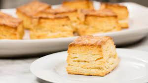

Buttermilk Biscuits

Soft, buttery, melt-in-your-mouth, flakly biscuits at their finest. A
great addition to any Sunday brunch or breakfast-for-dinner. Recipe
courtsey of America's Test Kitchen.
Ingredients
- 2 cups unbleached all-purpose flour (10 ounces)
- 1 tsp sugar
- 3/4 tsp kosher salt
- 2 tsp baking powder
- 1/2 tsp baking soda
- 7 tbsp chilled, unsalted butter, plus 1 tbsp melted butter for
brushing biscuits
- 1 cup buttermilk
Instructions
- Adjust oven rack to middle position and preheat oven to 475 degree
Fahrenheit.
- In a large bowl, whisk together flour, sugar, salt, backing powder,
and baking soda. Toss butter stick into flour mixture to evenly coat
before grating it to the bowl.
- Slowly drizzle buttermilk over flour-butter mixture while stirring
with a fork. Stop stirring when dough begins to form but mixture is
still crumbly.